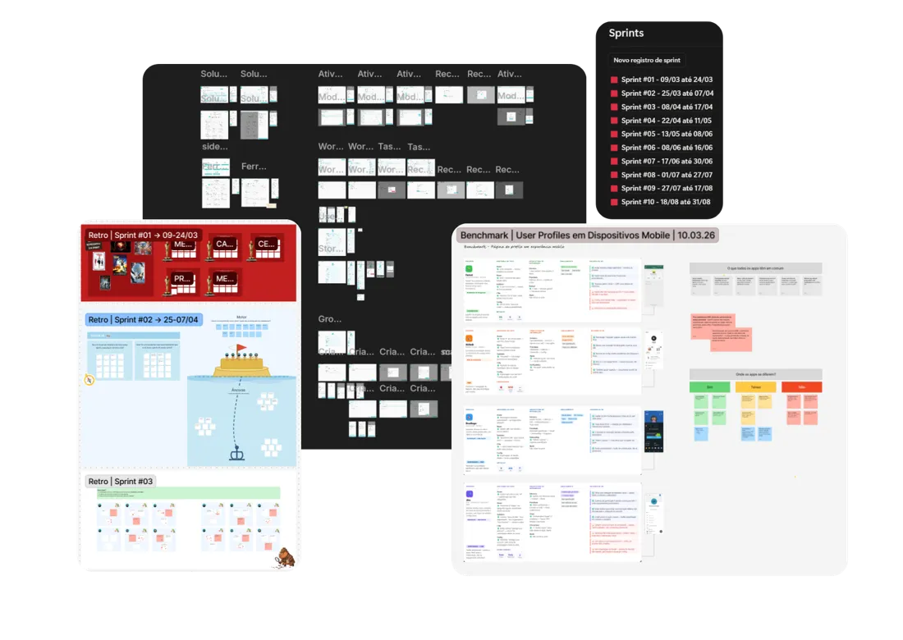

Backlog, discovery e qualidade numa squad AI-first
Como PM numa squad recém-criada, transformei estratégia em execução rastreável e protegi a integridade dos dados do produto.
- Empresa
- Visio
- Meu papel
- Product Management Intern
- Quando
- Jan a out de 2026
- Ferramentas
- Figma, Jira, Mixpanel, Claude Code
O problema
O Visio OS atende redes de franquias e varejistas multiloja. As ferramentas da plataforma funcionavam como ilhas. O gerente de loja recebia cobranças de vários lados, e o gestor multiloja dependia de ligações diárias para saber como as lojas estavam. A coordenação vivia no WhatsApp e em planilhas.
O que eu fiz
- Backlog do MVP. Estruturei cerca de 11 épicos e 50 histórias com critérios de aceite, e mantive a documentação das decisões da squad.
- Discovery com 59 clientes. O survey mostrou que 56% usavam planilhas e 49% WhatsApp para gerir tarefas. Só 7% usavam um app dedicado.
- Design review. Conduzi sessões com as heurísticas de Nielsen antes do lançamento. A tela "Orquestração" virou "Soluções", cortamos botões primários em excesso e tiramos a dependência de hover no mobile.
- QA. Escrevi e executei planos de teste com falhas classificadas de P1 a P3. Barrei uma falha silenciosa ao mover tarefas não atribuídas no mobile.
- IA com filtro humano. Usei o Claude Code para quebrar épicos e escrever especificações. Numa sprint, uma análise automática apontou inconsistências que não existiam. Documentei e fechei o item para não onerar o time.
Um dado que mudou o produto
A gente supunha que cada tarefa tinha uma duração fixa. O survey derrubou isso: 73% disseram que o tempo depende do movimento da loja. Por isso, adotamos faixas de tempo estimado em vez de um campo livre.
O trade-off mais difícil
Às vésperas de uma entrega, descobrimos que o sistema marcava tarefas como concluídas a partir de qualquer ação indireta. As métricas ficariam altas, mas falsas. Apoiei a conclusão por origem: só uma ação feita dentro da solução move o card. Aceitamos números iniciais menores para ter um indicador honesto.

O que aprendi
Uma métrica que sobe sozinha pode estar mentindo. Produto bom mede valor real, não vaidade.